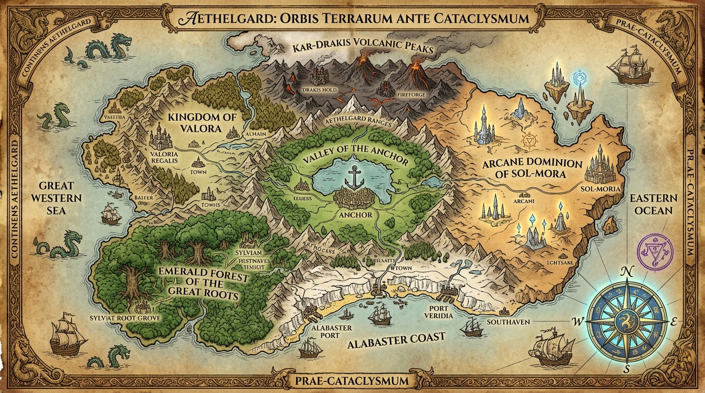

Overview of The Universe
The foundations of Aethelgard, the RB Epoch, and the identity of the creator.
📖 The Lore of Decked Out
The Chronicles of the Shattered World, the Great War, and Aethelos the Slumbering God
"The world was not ended by a whisper or a dying star. It was broken by mortal hubris. And from the blood and fire of the Great War, a desperate fellowship rose to mend the sky."
🌌 Overview of the Universe
Welcome to the official Decked Out Lore Codex.
In this universe, the characters are not cards—they are living flesh, forged steel, wild sorcery, and bloodstained survivors. Long ago, reality itself was shattered by mortal ambition when the imperial scholars of Sol-Mora attempted to siphon the life-force of the creator: Aethelos, The Slumbering God.
The catastrophic backfire triggered The Great World War. As planar boundaries tore open, wild magic flooded the earth, ferocious ancient dragons awoke into four warring elemental flights, and abyssal monstrosities crawled from subterranean trenches.
When civilization collapsed into ruin and fractured into decades of vicious localized wars (the Age of Splinters), one martial hermit—the Deck Monk—embarked on a crusade across the broken continents. Gathering an alliance of battle-hardened survivors, the heroes march toward the epicenter of the cataclysm: Mount Calamity and the Celestial Rift, waging a generational war of sacrifice to awaken Aethelos and heal reality.
⏳ The Chronological Epoch: The RB System
All history in Aethelgard is measured relative to the catastrophic moment reality fractured:
- BRB (Before Reality Broke): The golden centuries of mortal civilization, the Five Empires, and elemental balance (e.g.,
1000 BRBto1 BRB). - 0 RB (The Shatter): The single day mortal hubris ruptured the celestial firmament, detonated the Firmament Siphon, and raised Mount Calamity.
- ARB (After Reality Broke): The dark era of the Great World War (
0–10 ARB), the Age of Splinters (11–24 ARB), and the Crusade of the Champions (25 ARBonward).
👑 The Name & Origin of The God: Aethelos
Etymology & Meaning
The name Aethelos is derived from two ancient roots of the First Tongue:
- Aeth / Aether: The primordial celestial quintessence—the pure, radiant upper firmament of the stars that exists beyond the mortal elements of earth, fire, water, and air.
- Telos: The ultimate purpose, completion, cosmic destiny, and final cause of existence.
Translated literally, Aethelos means:
"The Celestial Destiny" or "The Slumbering Anchor of the Cosmos."
He is not a vengeful demon or a petty conqueror. Aethelos is the primordial architect whose dreaming consciousness originally wove the laws of nature, gravity, and life into being. When mortal machines drove siphon pins into his sleeping heart at 0 RB, the shock caused his divine will to violently withdraw into an impenetrable celestial coma. His dreaming pain is what bleeds wild magic and tears into reality. He possesses unfathomable, godlike strength; only through generations of accumulated wounds and mortal defiance can his slumber finally be broken to save the world.
📚 Lore Codex Structure (Volumes 00 – 07)
Every volume continues directly into the next, forming an unbroken epic history:
| Volume | Title | Period | Description | Read More |
|---|---|---|---|---|
| 00 | 1000–0 BRB | The Five Empires, the discovery of the Whispering Glyphs, imperial hubris, the Firmament Siphon, and the exact moment reality broke. | ||
| 01 | 0–25 ARB | The inrush of wild magic, monsters, and dragons; the Great World War; the Age of Splinters; and the Monk's crusade. | ||
| 02 | 10 BRB / 25 ARB | Visual maps of Aethelgard Before and After the war, regional territories, frontlines, and major historical campaigns. | ||
| 03 | Ongoing | Tactical focus, Armor vs. Ward defenses, quick-draw satchels, heirloom relics, and dedicated combat elixirs. | ||
| 04 | Wartime | The living wartime factions: Alchemists, Wild Mages, Iron Vanguard, Primal Beasts, Abyssal Horrors, and Goblin Scrappers. | ||
| 05 | 5–25 ARB | The individual war origin stories of each hero: Deck Monk, Gabe, Hunter, Necri, Lost Spirit, Demonling, Scrap Goblin, and the Dragon. | ||
| 06 | Present | Neutral survivors of the war: The Trader (smuggler), The Chemist (apothecary), The Gambler (profiteer), and battle altars. | ||
| 07 | Ongoing | Mount Calamity, the apex Dragon Lord, the Celestial Rift, the living siege of Aethelos, and why the war continues today. |
🌊 The Living War & The Expanding Codex (Game Updates & Expansions)
The war has not ended—it is being waged in real time.
Because Aethelos remains in his wounded celestial stasis, the cosmic fabric of Aethelgard continues to fluctuate. Every time mortal champions strike the creator, his dreaming consciousness recoils, sending Cosmic Tremors through the continents.
These tremors explain why the world and the game are constantly expanding:
- New Card Expansions (e.g., Series 2 Dragons): Tremors rupture deep subterranean magma pipes and permafrost caverns, awakening deeper elemental flights—such as the 32 dragons of Fire, Ice, Poison, and Earth.
- New Combat Disciplines & Relics: Fractured terrain exposes forgotten armories from the fallen empires of Valora, Sol-Mora, and Kar-Drakis.
- New Foes, Bosses, & Encounters: As ether leaks through planar rifts, new abyssal mutations and rogue warlords emerge to contest the land.
Every run played by the user is an active expedition in the Generational Siege. The chronicles will continue to grow as long as the war for reality is fought.
🗺️ High-Resolution World Maps
- Before the Cataclysm (10 BRB):
map_before_war.jpg - After the Shattering (25 ARB):
map_after_war.jpg
The Golden Age & The Eve of Ruin
From the Golden Age of the Five Realms to the catastrophic rupture of the Firmament Siphon.
Volume 00: The Golden Age & The Eve of Ruin (Prequel)
"In the days before the sky bled, we believed our peace was eternal. We built towers to touch the stars, forged steel to tame the earth, and forgot that the ground beneath our boots was only solid because the Creator was asleep." — High Scholar Elenor of Sol-Mora (Recorded 2 BRB)
⏳ The Chronology of the World: The RB System
All history in Aethelgard is measured in relation to the catastrophic moment reality fractured:
- BRB (Before Reality Broke): The golden centuries of mortal civilization, imperial expansion, and elemental balance.
- 0 RB (The Shatter): The single day mortal hubris ruptured the celestial firmament, awakening monsters, wild magic, and dragons.
- ARB (After Reality Broke): The dark era of the Great World War, the Age of Splinters, and the desperate crusade to save existence.
🏛️ The Five Great Empires of the Golden Age (500 BRB – 10 BRB)
For five hundred years prior to the cataclysm, the continent of Aethelgard was divided among five grand civilizations, each presiding over a unique geographical and cultural domain:
[ NORTH: Kar-Drakis ]
(Volcanic Crags & Peaks)
|
[ WEST: The Iron Realm ] --- [ HEARTLAND ] --- [ EAST: Sol-Mora ]
(Valora & High Forts) (Valley of Anchor) (Spires of Arcane)
|
[ SOUTH-WEST: Great Roots ]
(Primeval Beast Canopy)
|
[ SOUTH: The Alabaster Coast ]
(Maritime Guilds & Ports)1. The Kingdom of Valora — The Iron Realm (West)
- Capital: Highfort Vance
- Dominion: Rolling temperate steppes, limestone cliffs, and the mineral-rich Ironvein Mountains.
- Culture: Governed by chivalric orders and military academies, Valora was the birthplace of the Iron Vanguard. They placed their faith in heavy plate, precision cavalry, and adamantine steel. Valora was renowned for maintaining law, order, and granaries that fed half the continent.
2. The Arcane Dominion of Sol-Mora — The Sun-Archive (East)
- Capital: The Starlit Spire of Sol-Mora
- Dominion: Crystalline plateaus, sapphire lakes, and high-altitude celestial observatories.
- Culture: Ruled by the High Conclave of Arch-Scholars, Sol-Mora was a society obsessed with cataloging cosmic truth. Magic was not wielded for war, but for architectural harmony, irrigation, and astronomical calculation. They believed mortal intellect was divine and destined to transcend physical limits.
3. The Sylvan Concord of the Great Roots (South-West)*
- Territory: The emerald primeval canopy of the Great Roots and the Bramblewood thickets.
- Culture: An ancient alliance between enlightened beast tribes (the ancestors of Gorilla Gabe and the wild packs) and tribal wardens. They rejected stone cities in favor of living arboreal settlements, acting as the spiritual wardens of the earth's natural rhythms.
4. The Alabaster Syndicate of the Sunken Coast (South)*
- Capital: Port Mirasol
- Dominion: White-sand archipelagos, coastal lagoons, and bustling commercial harbors.
- Culture: The merchant and alchemical capital of the world. Here, the first Alchemical Order was formed, harvesting deep-sea corals, rare coastal botanicals, and mineral salts to brew medicines and regenerative draughts that cured mortal ailments across every kingdom.
5. The Subterranean Forge of Kar-Drakis (North)*
- Capital: The Deep Hearth of Drakis
- Dominion: Volcanic crags, molten fissures, and subterranean cavern cities.
- Culture: Home to the greatest mining guilds, dwarven runecarvers, and goblin tinkers (ancestors of the Scrap Goblin). They lived in deep respect of the dormant dragon clutches sleeping deep within the magma pipes, mining iron and gold while adhering to the ancient pact of silence.
🌌 The Awakening of Hubris: The Whispering Monolith (15 BRB)
Peace began to rot from within around 15 BRB.
Deep beneath the central plateau in the Valley of the Anchor, imperial miners from Sol-Mora and Kar-Drakis broke into a colossal subterranean cavern never charted in any text. At its center rested a monolithic pillar of pure celestial quartz that hummed with a vibration that made mortal hearts skip a beat.
Around the quartz were carved the Primal Glyphs of Aethelos.
When the High Arch-Mage of Sol-Mora, Arch-Arbiter Vaelis, translated the ancient runes, he made a discovery that shattered imperial modesty:
- The universe was not an accident of nature; it was maintained by the dreaming mind of an immortal entity called Aethelos.
- Aethelos rested in a state of eternal celestial slumber, His dreaming life-force acting as the gravitational and metaphysical anchor of all reality.
- Vaelis theorized that if mortals could siphon even a fraction of one percent of this divine life-force, humanity would achieve complete transcendence: disease would be eradicated, crops would never wither, armor would be unbreakable, and mortals would live forever.
⏳ The Great Dispute (10 BRB – 2 BRB)
When Vaelis proposed constructing a colossal subterranean mechanism to harvest Aethelos’s life-force, the continent split into ideological factions:
- The Siphoning Coalition (Sol-Mora, Valora, Alabaster Syndicate):
Seduced by the promise of immortality and infinite energy, the Arch-Mages of Sol-Mora, the Kings of Valora, and the merchant princes of the coast funded the construction of the Firmament Siphon—a titanic conduit ring designed to channel celestial essence into refined mortal crystals.
- The Wardens of the Anchor (The Sylvan Concord & The Monks of Shuffled Palm):
The beast clans of the Great Roots and the ascetic hermits on the mountain peaks vehemently opposed the project. The Grand Master of the Shuffled Palm delivered a dire warning to the imperial court:
"You seek to drink from the ocean of creation with a porcelain teacup. If you wake the dreamer, the dream ends. If you wound the anchor, the world will drift into the jaws of the abyss."
Their warnings were branded as primitive superstition. The Sylvan Concord retreated into their forests, the Monks sealed their high monastery doors, and construction proceeded day and night.
⚡ The Day Reality Broke (Year 0 RB)
On the winter solstice of Year 0 RB, the Firmament Siphon was completed.
Thousands of dignitaries, knights, scholars, and merchants gathered across the rim of the Valley of the Anchor to witness the dawn of humanity’s golden immortality. Arch-Arbiter Vaelis stood atop the central conduit, raised his staff, and drove the siphon pins deep into the celestial quartz core of Aethelos.
For three seconds, blinding golden light bathed the continent. Mortals wept as blind men regained their sight and old scars vanished.
Then, the world screamed.
The divine consciousness of Aethelos did not yield; it recoiled. The sudden shock of mortal intrusion violently tore the celestial fabric connecting His divine realm to the mortal plane. The Firmament Siphon did not channel the energy—it fractured beneath cosmic pressure and detonated in an apocalyptic shockwave.
- The Valley of the Anchor imploded, the ground thrusting upward violently into the sky to form the jagged, smoke-belching volcano of Mount Calamity.
- The celestial sky cracked open in a roaring violet fissure known as the Celestial Rift.
- The planetary barrier tore apart. Deep subterranean vaults broke open, disgorging hordes of abyssal monstrosities; dormant magma calderas erupted, awakening the ancient flights of dragons in manic terror; and raw, unfiltered wild magic flooded the atmosphere like boiling poison.
Reality had broken. The golden age was dead. And as the screams of millions echoed across the burning continents, The Great World War began.
The Shattered World & The Great War
The immediate aftermath of 0 RB, the tripartite inrush of plagues, and the Monk's crusade.
Volume 01: The Shattered World & The Great War
"The sky did not fall. It cracked open like heated bone, and through the marrow of the heavens came the beasts, the wild flame, and the madness of gods." — Elder Chronicler of the Broken Age
⚔️ The Shattering of Reality
Before the skies burned with unnatural twilight, the world was a living, breathing tapestry of proud mortal kingdoms, vast ancient forests, iron-girded cities, and tranquil mountain sanctuaries. There was order. Magic was a sacred, rare discipline guarded by scholar-monks, dragons slept quietly beneath the roots of the earth, and aberrations were sealed in deep subterranean trenches.
Then, someone broke the world.
Whether it was an ambitious arch-scholar seeking to unseat the creator, a desperate warlord trying to conquer death itself, or a forbidden rite that pierced the celestial firmament, the result was absolute catastrophe. Reality did not merely bend—it shattered.
The cosmic boundaries that kept mortal life separated from chaotic primordial dimensions fractured like struck glass. Day and night collapsed into a turbulent, violet-streaked aurora. Continents violently shifted along jagged planar fault lines, oceans boiled in their basins, and the very laws that governed life, gravity, and time tore apart at the seams.
🌪️ The Inrush: Magic, Monsters, and Dragons
When the veil of reality tore open, the world was flooded by three catastrophic plagues:
- Unbound Wild Magic: Raw, primordial ether poured across the continents like an ocean breaching a dam. The air became thick with crackling, volatile energy. Meadows burst into spontaneous blue flames, gravity reversed over entire provinces, and ordinary mortals found themselves suddenly cursed or gifted with uncontrollable, destructive magical power.
- The Abyssal Monsters: From the subterranean depths and the cosmic wounds in the earth crawled nightmares that had never before seen the light of day. Chittering aberrations, hulking bone-stitched behemoths, and shadow-draped reapers poured into mortal valleys, devouring everything in their path.
- The Awakening of the Dragons: Deep beneath the mountain roots and within ancient volcanic calderas, the primordial wyrms awoke. Maddened and intoxicated by the violent surge of raw magic, the dragons rose into the heavens. Divided into four savage elemental flights—Fire, Ice, Poison, and Earth—they laid claim to the burning skies, turning prosperous kingdoms into scorched hunting grounds.
🛡️ The Great World War
Faced with the collapse of their world, humanity and its allied races did not unite. Instead, panic and mutual suspicion ignited The Great World War.
Empires accused neighboring kingdoms of unleashing the cataclysm. Great armies clad in steel clashed on muddy plains beneath skies raining eldritch lightning. Sorcerers hurled catastrophic spells that erased entire mountain passes, while beastmasters and frontline phalanxes met in bloody, chaotic slaughter.
As the armies of the world bled one another dry, the monsters and dragons fell upon them. Entire legions were wiped out overnight. Castles melted under draconic firestorms, fortress walls were pulverized by abyssal behemoths, and within a few brutal years, the ancient civilizations had thoroughly pulverized one another into dust.
🩸 The Age of Splinters: The Small Wars
When the Great War finally collapsed under the weight of sheer exhaustion and mutual slaughter, no kings or empires remained to claim victory.
In its place began the Age of Splinters—a brutal era of dozens of small, unending territorial wars:
- Warlords and deserters formed ruthless bandit syndicates, butchering survivor caravans.
- Isolated settlements fought desperate skirmishes against goblin scavenger clans hungry for scrap metal and weapons.
- Cults worshipped the cosmic tears in the heavens, sacrificing wanderers to dark abyssal entities.
- Every valley, ruined town, and mountain pass became an isolated warzone where surviving one more night was the only victory.
The world was dying of a thousand bleeding wounds.
🥋 The Wayfarer’s Crusade: Deck Monk Takes the Field
High above the scorched earth, upon the mist-shrouded peaks of the Shuffled Palm, lived a solitary martial artist known as the Deck Monk.
From his mountaintop sanctuary, he looked out across the continent and saw the smoke of burning cities and the unending slaughter of the smaller wars. The Monk realized a tragic truth: mortals were fighting the symptoms. Slaying a bandit or driving off a pack of wolves did nothing to mend the wound in the sky. If the tear at the heart of the world was not healed, reality itself would eventually dissolve into complete nothingness.
The Deck Monk tied his sash, took up his staff, and walked down into the battlefields.
He knew no single warrior could heal a broken cosmos alone. To save reality, he needed to forge an alliance—not of conscripted soldiers, but of living legends. He set out across the war-torn world to find and unite the fiercest survivors of the Great War, each possessing their own unique strength, combat discipline, and reason to fight.
👥 The Gathering of Champions
One by one, through ruined forests, bone-choked crypts, and burning wastes, the Monk rallied his champions:
- Gorilla Gabe: The indomitable primal titan who held a mountain pass alone against waves of abyssal terrors to protect his kin.
- Hunter The Hedgehog: A hardened frontline scout who survived the massacre of the Bramblewood, turning himself into a whirlwind of razor quills.
- Necri: A brilliant scholar who walked the mass graves of the Great War, commanding the bones of the fallen to act as an unyielding protective wall for survivor enclaves.
- The Lost Spirit: A heroic soldier whose physical body died in the trenches of the Great War, but whose sheer devotion to saving others kept their spirit walking the earth.
- Demonling: A fire-born imp who crawled out of volcanic rifts, choosing to turn his explosive fury against the horrors of the dark rather than watch the world burn.
- Scrap Goblin: A battlefield engineer who survived the wars by salvaging discarded weapons and armor, hammering junk into devastating turrets and contraptions.
- The Dragon: An orphaned hatchling found amidst the ashes of a destroyed eyrie, carrying within its blood the dormant strength of all four ancient dragon flights.
Each hero carried deep scars from the war. Each had their own story of survival. But under the Monk's vision, they united with a single purpose: to march to the epicenter of the shattered world and heal reality.
👑 The Slumbering God & The Generational War
At the heart of the continent, where reality first cracked, lies the Celestial Rift—a blinding tear into the cosmic firmament guarded by the apex Dragon Lord.
Beyond that mountain summit lies the ultimate truth: Aethelos, The Slumbering God.
Aethelos is the celestial architect whose dreaming consciousness originally shaped the world. When reality broke, Aethelos fell into a divine, unresponsive stasis. His power is unfathomable—a celestial titan so immensely strong that mortal weapons seem like splinters against his skin, and a single wave of his cosmic wrath can incinerate entire battle lines.
No single hero, no matter how skilled or brave, could ever defeat Aethelos in a single battle.
Thus began the Generational War:
- Each champion, in their own time and across countless expeditions, stepped through the rift to challenge the God.
- They failed again, and again, and again. Heroes were struck down by divine judgement; legendary warriors fell in the celestial dust.
- Yet every strike left a mark that could never heal. Gabe’s fists bruised the divine armor; Hunter’s quills opened eternal weeping cuts; Necri’s death magic chipped away at his celestial ward; the Monk’s strikes cracked his divine resolve.
- For decades, generation after generation of champions have thrown themselves against the titan. Every defeat is not a loss, but a sacrifice that weakens the creator just a fraction more.
This war is not ancient history—it is being fought right now, in the present day. With every expedition that climbs Mount Calamity and enters the Celestial Rift, another strike is landed, another wound is carved, and humanity draws one breath closer to the day when the final blow awakens the creator and mends the broken world forever.
Atlas of the Broken World
Visual cartography of Aethelgard Before and After the war, regional territories, and major campaigns.
Map I: Aethelgard Before the Cataclysm
The Golden Age: clear borders, prosperous cities, tranquil seas, Valley of Anchor
Volume 02: Atlas of the Broken World (Cartography & War Theaters)
"If you wish to understand why our world bleeds, look at the soil beneath your boots. Every valley has a name, every mountain was contested, and every river once ran red with the blood of armies." — Quartermaster Malakor, Cartographer of the Fallen
🗺️ Visual Cartography of Aethelgard
Map I: Aethelgard Before the Cataclysm (10 BRB)
The Golden Age of the Five Empires: clear borders, prosperous cities, tranquil seas, and the sacred Valley of the Anchor.
Map II: Aethelgard After the Shattering (25 ARB)
The Ruined Continent: Mount Calamity erupting at ground zero, the Celestial Rift tearing the sky, shattered citadels, floating arcane debris, and frontline trenches.
⚔️ The War Theaters: Before & After the Collapse
Below is the historical chronicle of every major territory on the continent, detailing who ruled before 0 RB, who fought during The Great World War (0–10 ARB), and what became of the land in the Age of Splinters (11–25 ARB).
1. The Central Heartland: From Peaceful Haven to Ground Zero
- Before the Shatter (10 BRB): The Valley of the Anchor
- A serene emerald valley surrounding a freshwater inland sea. Sacred ground where all five empires convened under ancient treaties of peace.
- The Cataclysm (0 RB):
- The Firmament Siphon ruptured. The tectonic plate buckled and thrust thousands of feet into the sky, forming the volcanic peak of Mount Calamity. Above the crater, the sky tore open into the swirling violet Celestial Rift.
- The War (0–10 ARB):
- Armies from Valora and Sol-Mora rushed to secure the crater, only to be incinerated when the apex Dragon Lord descended and claimed the summit as his throne.
- Present State (25 ARB):
- The most dangerous zone in the world. Smoldering ash fields, patrolling drakes, and the gateway through the clouds where mortal heroes must climb to reach the rift of Aethelos.
2. The Western Front: From Iron Chivalry to Rust Trenches
- Before the Shatter (10 BRB): The Kingdom of Valora
- Rolling temperate plains guarded by massive stone bastions (Highfort Vance) and home to the disciplined legions of the Iron Vanguard.
- The War (0–10 ARB):
- Blaming Sol-Mora for the cataclysm, Valora marched its heavy cavalry and phalanxes eastward. Midway through the march, subterranean chasms opened beneath their lines, disgorging waves of bone-amalgams and demonic horrors.
- The ensuing Battle of the Red Steppes saw three royal armies annihilated.
- Present State (25 ARB): The Crumbled Citadels & Iron Graveyard
- Rusted swords, shattered war-wagons, and collapsed castles litter the horizon. Bandit warlords fight vicious skirmishes over surviving grain silos, while goblin scavengers—led by the Scrap Goblin—turned the trenches into salvage grounds for automated defenses.
3. The Eastern Front: From Starlit Spires to Arcane Fallout
- Before the Shatter (10 BRB): The Arcane Dominion of Sol-Mora
- Gleaming crystalline cities, celestial towers, and vast libraries where scholars calculated astronomy and cultivated harmonious magic.
- The War (0–10 ARB):
- When reality broke, the raw magical ether flooded Sol-Mora with uncontrollable pressure. The great Starlit Spire detonated; crystalline plateaus ripped free from the bedrock and floated into the sky in anti-gravity clusters.
- Desperate scholars fractured into warring cabals, hurling volatile hexes and lightning storms at one another in madness.
- Present State (25 ARB): The Floating Ruins & Mana Craters
- A distorted landscape of purple energy craters and levitating islands. It is here that the Circle of Wild Mages emerged—survivors who learned to harness raw, volatile chaos magic that ignores iron armor to incinerate magical wards.
4. The South-Western Front: From Primeval Sanctuary to Fortified Redoubt
- Before the Shatter (10 BRB): The Sylvan Concord of the Great Roots
- A colossal, thousand-year-old emerald canopy home to enlightened beast clans, ape chieftains, and guardian druids living in harmony with nature.
- The War (0–10 ARB):
- Abyssal monsters and starving refugee armies pushed into the sacred woods, setting fire to ancient boughs. In the Gorge of the Great Roots, Gorilla Gabe held the defensive perimeter alone for three days, breaking monstrous hordes with his bare fists until the beast clans could secure the interior.
- Present State (25 ARB): The Bramblewood & Deep Roots Redoubt
- The surviving canopy is now surrounded by deep defensive briar trenches. Guarded by Gabe’s stalwart brawn and Hunter The Hedgehog’s razor-quill ambushes, the forest remains one of the few safe havens for civilian survivors.
5. The Southern Front: From Merchant Haven to Sunken Basins
- Before the Shatter (10 BRB): The Alabaster Syndicate & Port Mirasol
- A glamorous maritime empire of white-stone arches, pearl harbors, and grand guildhouses where the Alchemical Order refined medicines.
- The War (0–10 ARB):
- When the tectonic plates buckled at 0 RB, massive tidal waves swallowed half of Port Mirasol. Ships crashed into palace courtyards, and deep-sea monstrosities washed ashore. The surviving alchemists went underground, setting up fortified field hospitals in subterranean vaults.
- Present State (25 ARB): The Sunken Ruins & Smuggler Bays
- Half-submerged marble pillars and shipwreck coves. It is the primary stomping ground of The Trader, who runs black-market contraband across the continent, and The Chemist, who experiments with volatile mutagens in flooded basements.
6. The Northern Front: From Forge Caverns to Draconic Calderas
- Before the Shatter (10 BRB): The Subterranean Hearth of Kar-Drakis
- Volcanic ridges where dwarven runecarvers and goblin tinkers mined magma veins while respecting the sleeping dragon nests deep below.
- The War (0–10 ARB):
- The cataclysm ruptured the magma chambers, waking the dragons in manic, territorial fury. The Fire, Ice, Poison, and Earth flights torched the mountain cities and claimed the northern jagged peaks as their hunting domain.
- Present State (25 ARB): The Draconic Calderas
- A scorched wasteland of magma rivers and frozen rime peaks. Only the boldest dare tread here—such as the Deck Monk, who rescued the lone quad-elemental Dragon hatchling from a destroyed mountain eyrie.
📜 Timeline of Major War Campaigns
| Year | Conflict | Belligerents | Outcome & Historical Impact |
|---|---|---|---|
| 0 RB | The Cataclysm of the Siphon | Sol-Mora Scholastic Vanguard vs. Reality | Reality fractures; Mount Calamity rises; Firmament tears open. |
| 1–4 ARB | The Great World War | Valora vs. Sol-Mora vs. Alabaster vs. Monsters | Total destruction of all centralized imperial governments and armies. |
| 5 ARB | The Battle of the Red Steppes | Iron Vanguard vs. Abyssal Horde | The last grand knightly charge; Valora falls; legions wipe out. |
| 6 ARB | The Siege of the Great Roots | Gorilla Gabe & Beasts vs. Abyssal Incursion | Gabe holds the gorge alone; primeval forest fortified as a redoubt. |
| 8 ARB | The Scourge of Bramblewood | Hunter The Hedgehog vs. Mercenary Warlords | Hunter wipes out a mercenary company with AoE quills; saves convoy. |
| 10 ARB | The Fall of Highfort Vance | Bandit Deserters vs. Scrap Tinkers | Scrap Goblin deploys automated defenses; marks the end of grand wars. |
| 11–24 ARB | The Age of Splinters (Small Wars) | Warlords, Mutants, Scavengers, Cults | Decades of localized skirmishes for survival across the ruined lands. |
| 25 ARB | The Wayfarer's Crusade Begins | Deck Monk & The Champions vs. The World's Tears | Monk descends from the mountains; rallies the champions for the final march. |
The Arts of War & Relics of the Fallen
Principles of combat in the broken world, ancient heirloom relics, and dedicated elixirs.
Volume 03: The Arts of War & Relics of the Fallen
"In the heat of a clash against a twenty-foot drake, you cannot remember every blow you ever trained. You have only the next three moves in your mind, the iron on your chest, and the will to survive." — Commander Vance of the Iron Vanguard
⚔️ The Principles of Combat in the Broken World
When reality shattered and the Great War consumed the continents, traditional warfare became obsolete. Armies could no longer rely on rigid battle lines or slow supply chains. Warriors had to adapt to fighting unpredictable monstrosities, rogue spellcasters, and soaring elemental dragons.
From the ashes of the Great War emerged the Universal Principles of Combat:
1. The Discipline of Focus (The Combat Repertoire)
In the chaotic frenzy of melee, the mind cannot hold infinite maneuvers simultaneously. A combatant’s working focus is limited to a handful of immediate tactical options—a sweeping strike, a protective ward, a quick draught of medicine, or a spell formula. As energy is spent executing a maneuver, the warrior draws upon their martial memory, cycling through techniques as the rhythm of battle evolves.
2. The Duality of Defense: Armor vs. Ward
The war taught survivors a brutal lesson about protection:
- Tempered Armor (Physical Defense): Heavy steel plate, boiled leather, dragon scales, and chitinous carapaces turn aside mortal blades, piercing arrows, and blunt warhammers. A heavy strike against thick armor will merely ring hollow, glancing off without inflicting harm.
- Arcane Ward (Magical Defense): Shimmering barriers of woven mana, elemental cloaks, and spiritual auras. These barriers absorb wild arcane lightning, demonic curses, and mystical flame. A wizard or beast coated in a thick ward will shrug off spells that would incinerate ordinary men.
To win in the broken world, a warrior must read their enemy’s mantle: slash at the unarmored mage, and shatter the armored knight with wild magic.
3. The Quick-Draw Satchel (Wartime Reserves)
No seasoned fighter enters unknown territory unprepared. Belted across every veteran’s waist is a tactical Sideboard Satchel containing specialized reserve gear, backup scrolls, and alternative techniques. Between skirmishes and at quiet camps, a warrior swaps their active repertoire—preparing armor-piercing maneuvers against iron sentinels or frost-warding spells before facing pyromancers.
🏺 Relics of the Fallen Empires
Across the scarred battlefields and sunken ruins of the Great War lie ancient artifacts of extraordinary power—Relics. These are not mundane weapons, but heirloom items forged by the master smiths, enchanters, and artificers of civilizations wiped from the map:
- The Iron Heart: An ancient dwarven chest-core that pumps vitality directly into a warrior’s bloodstream, bolstering their maximum endurance.
- The Keen Edge: A whetstone imbued with the residual fury of a thousand fallen duelists, perpetually sharpening steel to bite deeper.
- The Mana Lens: A crystalline monocle that focuses the ambient wild magic in the air, expanding a caster's mental reservoir.
- The Sundered Chisel: An anti-armor tool capable of finding the hairline microscopic fractures in heavy plate, stripping defenses with surgical precision.
- The Hexglass Lens: A refractive gem that dispels enemy magical wards before a spell even makes contact.
These relics cannot be mass-produced; each is a precious, irreplaceable fragment of a lost world, salvaged from mud and bone to grant their bearers an edge against extinction.
🧪 Battlefield Alchemy: Dedicated Elixirs
On the warfront, healing cannot wait for a campfire or a quiet respite. Alchemists of the broken world developed hyper-condensed tonics designed for instantaneous consumption in the midst of life-or-death duels.
Every fighter wears Dedicated Quick-Pockets strapped to their chest or belt, keeping restorative brews separate from their offensive gear:
- Magic Milkshake & Mystic Teas: Soothing blends that restore mental focus and cleanse the mind of lingering fatigue.
- Moonbrew & Spirit Broths: Potent revitalizing tonics that stitch torn flesh, mend cracked ribs, and replenish raw stamina in seconds.
- Wartime Cleanses: Acidic distillations designed to instantly purge blistering burns, demonic poisons, and necrotic rot from the veins before they turn fatal.
📜 The Ledger of Remembrance
Warriors die. Bodies rot in the trenches or dissolve in dragonfire. But their martial knowledge and hard-won techniques do not have to perish with them.
Survivors carry the Ledger of Remembrance—a shared martial grimoire where veteran warriors transcribe the stances, maneuvers, spell chants, and survival lessons learned in the crucible of battle. Through this living codex, the wisdom of heroes who fell in the Great War lives on in the hands of the next generation, ensuring that every drop of blood spilled contributes to the survival of the living world.
The Six Martial & Magical Orders
The primary combat philosophies forged in the fires of conflict.
Volume 04: The Six Martial & Magical Orders
"A lone swordsman meets an iron shield; a mage meets a crystalline ward; an alchemist drinks deep and outlasts them both. But when a goblin drops a crate of ticking scrap into the trenches, everyone runs."
During the cataclysm of the Great War and the decades of smaller wars that followed, survival forced every fighter, creature, and scholar into distinct disciplines. These six factions represent the primary combat philosophies forged in the fires of conflict.
🧪 1. The Alchemical Order (Combat Elixirs)
- Philosophy: Vitality, Bodily Transmutation, and Rapid Regeneration.
- Wartime Role: Field medics, survivalists, and front-line enhancers.
- Combat Style: Immediate physical fortification, sudden burst stamina, and toxin cleansing.
- Lore:
When the sky cracked and toxic planar fallout blanketed the earth, the Alchemists were the only reason mortal bodies survived. Operating out of mobile field clinics and ruined apothecary halls, they learned to distill the raw life-essence of magical herbs, monster glands, and pure waters. In battle, an Alchemist or their allies rely on fast-access belt phials to instantly close bleeding wounds, boost muscular reflexes, and withstand strikes that would cleave an unenhanced warrior in two.
🔮 2. The Circle of Wild Mages
- Philosophy: Planar Ruptures, Ethereal Chaos, and Ward-Melting.
- Damage Profile: Magic Damage (Checks and drains enemy Ward; ignores physical Armor).
- Combat Style: Ranged arcane barrages, reality warping, and volatile lightning strikes.
- Lore:
While old-world academics perished clutching dusty, rigid spellbooks, the Wild Mages adapted to the broken world. They opened their minds to the untamed magical radiation that flooded the continents. Calling down arcing bolts of static electricity, blinking through dimensional ripples, or opening miniature tears to the void, their sorcery bypasses thick iron plate entirely—burning directly through mystical wards to scorch the enemy's spirit.
⚔️ 3. The Iron Vanguard (Swordsmen & Knights)
- Philosophy: Unyielding Discipline, Martial Drills, and Tempered Plate.
- Damage Profile: Physical Damage (Checks and breaks enemy Armor; blunted by heavy metal).
- Combat Style: Crushing melee swings, shield walls, armor sunder, and ruthless execution strikes.
- Lore:
When the ancient kingdoms crumbled and magic threatened to tear everything apart, the soldiers of the Iron Vanguard placed their faith in heavy steel and uncompromising discipline. Clad in forged breastplates and wielding greatswords, halberds, and warhammers, they form an unbreakable frontline. Their armor turns aside fangs, arrows, and daggers, while their veterans ruthlessly identify weak points in enemy armor to cleave them in two.
🐾 4. The Pack of the Primal Wild (Beastmasters & Predators)
- Philosophy: Savage Instinct, Pack Harmony, and Deep Lacerations.
- Damage Profile: Rapid physical strikes and cumulative Bleed/Wound trauma.
- Combat Style: Coordinated flanking attacks, vicious rends, and pack-wide howls.
- Lore:
As the Great War decimated mortal farmlands and pushed into the deep forests, the creatures of the wild united to defend their ancestral territories. Led by fierce apex predators and cunning woodland defenders, the Primal Wild fights not as lone combatants, but as a coordinated pack. A single rallying howl from an alpha invigorates every beast within earshot, while claws, fangs, and quills tear open weeping wounds that cause enemies to bleed out with every step they take.
👹 5. The Abyssal Incursion (Monsters & Abominations)
- Philosophy: Unbridled Carnage, Reckless Power, and Soul Harvesting.
- Damage Profile: Colossal single-target trauma, battlefield-wide splash, and life-draining curses.
- Combat Style: Uncontrolled berserk assaults that ravage enemy ranks while risking self-harm.
- Lore:
Spawned from the deepest planar rifts ripped open during the cataclysm, the Abyssal Incursion comprises the terrors that haunt mortal nightmares. These include volcanic behemoths, towering bone horrors, and shadowy harbingers of death. On the battlefield, monsters strike with catastrophic violence—unleashing shockwaves and explosions that obliterate entire enemy squads at the volatile risk of splashing destructive force into their own ranks.
⚙️ 6. The Junkyard Scrappers (Goblin Artificers)
- Philosophy: Improvisation, Battlefield Scavenging, and Explosive Engineering.
- Combat Style: Transforming spent weapons and broken armor into live turrets, traps, and bombs.
- Signature Discipline: Scrap Salvage & Construction.
- Lore:
Where other factions saw the wreckage of destroyed armies as solemn tombs, the goblins of the under-realms saw an endless supply of free weapon parts. Wandering across bloodied battlefields with leather aprons and welding torches, these scrappers gather twisted swords, shattered shields, and spent artillery shells. In the middle of an active firefight, a skilled scrapper can hammer together a scrap shield, deploy a clockwork gun-turret, or hurl an unstable shrapnel bomb, turning the dead debris of war into relentless tactical supremacy.
Chronicles of The Champions
How eight survivors of the Great War answered the Monk's call to heal the world.
Volume 05: Chronicles of the Champions
"Seven walked down from the mountains, crawled out of the trenches, or rose from the graves. None fought for glory. They fought because the world had bled enough."
To challenge an immortal creator and mend the shattered world, the Deck Monk needed more than soldiers. He needed living legends who had been forged in the brutality of the Great War and the desperate territorial wars that followed. Here are the chronicles of how eight survivors became the champions of the world.
🥋 1. The Deck Monk — The Harbinger of Balance
- Origin: The Mountaintop Sanctuary of the Shuffled Palm
- Combat Style: Flawless Martial Discipline, Staff Mastery, and Arcane Equilibrium.
- The Chronicle:
High above the burning continents, the ascetic order of the Shuffled Palm observed the world through quiet meditation. When the sky cracked and the Great War began, the monastery's elders voted to seal their iron gates and wait out the apocalypse in peaceful prayer.
The Monk refused.
He looked down upon the plains and saw innocent families butchered by warbands, fields scorched by wild magic, and children fleeing from nightmare beasts. To the Monk, true spiritual enlightenment could not exist behind closed monastery doors while the world perished. He snapped his vow of isolation, tied his red sash, took up his traveler’s staff, and walked down the mountain.
Intervening in bloody skirmishes across the lands, the Monk disarmed warlords and shielded the helpless. But he soon realized that saving isolated villages was merely prolonging a slow death. The only way to stop the bleeding was to journey to the cosmic rift at the center of the world and heal reality itself. With a calm heart and an unshakeable will, he set out to find the allies who would help him finish the war.
🦍 2. Gorilla Gabe — The Primal Bulwark
- Origin: The Canopy of the Great Roots
- Combat Style: Colossal Physical Resilience, Crushing Blows, and Ground-Shaking Slams.
- The Chronicle:
During the height of the Great War, a terrifying horde of abyssal monstrosities broke into the primeval Great Roots—the ancestral forest of Gabe’s kin. As demonic fire threatened to turn the thousand-year-old canopy to ash, the surviving clan retreated toward a narrow canyon exit.
Gabe refused to run.
He planted himself at the narrow mouth of the gorge, roaring in defiance. For three days and three nights without food or sleep, Gabe held the pass alone. He smashed bone-armored behemoths with his bare fists, shattered war-beasts against the canyon walls, and absorbed crushing blows that would have cleaved a platoon of armored knights.
When the Monk finally found the gorge, Gabe was still standing—battered, covered in blood, but surrounded by mountains of fallen foes. The Monk tended to Gabe’s wounds and spoke of a battle that could end all wars. Recognizing a kindred protector, Gabe nodded and joined the fellowship.
🦔 3. Hunter The Hedgehog — The Quill Tempest
- Origin: The Bramblewood Borderlands
- Combat Style: Omnidirectional AoE Strikes, Bleed Lacerations, and Evasive Bursts.
- The Chronicle:
Hunter was once an unassuming borderland tracker, known only for his speed and quiet navigation through the treacherous briar thickets. But when the Great War splintered into lawless bandit wars, a ruthless mercenary syndicate raided the Bramblewood settlements, taking hostages and slaughtering anyone who resisted.
When the mercenaries cornered a convoy of refugee families in a dead-end ravine, Hunter stepped between the blades and the civilians. The bandits laughed at the small creature—until Hunter curled into a spinning, blinding tempest.
In a split second, he unleashed a roaring hurricane of needle-sharp quills, striking every single mercenary in the canyon simultaneously. Each quill dug deep into arteries, leaving weeping wounds that caused the bandits to collapse within strides. From that day forward, the Bramblewood was protected by the "Quill Tempest." When the Monk arrived, Hunter saw an opportunity to ensure that no child in any corner of the world would ever fear the darkness again.
💀 4. Necri — Mistress of the Bone Ward
- Origin: The Mausoleums of the Great Ossuary
- Combat Style: Levitating Bone Shielding, HP Regeneration, and Skeletal Frontlines.
- The Chronicle:
Necri was originally a brilliant imperial medical scholar sent to the frontlines during the first global war. Day after day, she watched thousands of young soldiers die in agony, their bodies abandoned in muddy mass graves to be scavenged by beasts. The pointless waste of human life broke her heart—and drove her to the forbidden study of osteomancy.
Necri did not seek power or dominion. She looked upon the millions of scattered bones on the battlefields and made a sacred vow: the dead would never be used to wage war again—they would be raised to protect the living.
She wove a swirling mantle of levitating skulls and ribcages around herself (the Bone Ward), making her completely immune to physical ambushes. Behind her, disciplined skeletal sentinels dug survivors out of collapsed bunkers, stood guard over refugee villages, and intercepted raiding parties. While ignorant warlords branded her a witch, the Monk recognized her deep compassion. He approached her without fear, inviting her to lead the vanguard to heal the world.
👻 5. The Lost Spirit — The Undying Sentinel
- Origin: The Trenches of the Blood River
- Combat Style: Ethereal Phase, Memory Pulling, and Rapid Combat Focus.
- The Chronicle:
In the bloodiest battle of the Great War, an unnamed vanguard soldier stood at the bridge of the Blood River, ordering their comrades to retreat while holding off an entire battalion of abyssal horrors alone. The soldier took a dozen spears through their chest plate, bleeding out in the freezing river mud.
Yet, the soldier’s devotion to protecting their allies was so fierce that even death could not extinguish it. When their physical heart stopped beating, their soul refused to depart for the afterlife.
Rising as an ethereal wraith of pale starlight, the Lost Spirit continued to patrol the battlefield, guiding lost wanderers through the fog and pulling lost memories and discarded weapons out of the astral ether. When the Monk crossed the river, the Spirit sensed the monk’s noble crusade. In a quiet whisper, the Spirit pledged its immortal soul to the quest—seeking to see reality healed so that it could finally rest.
🔥 6. Demonling — The Spark of Ruin
- Origin: The Brimstone Fissures
- Combat Style: Burning Flame Strikes, Volatile Explosions, and Demolition Summons.
- The Chronicle:
When reality cracked open, subterranean sulfur rifts erupted across the volcanic badlands, disgorging hordes of cruel imps and demons eager to burn what was left of civilization. Among them was Demonling, a small creature born of pure fire.
Unlike his sadistic brethren, Demonling had a curious heart and loved watching mortals laugh, tell stories around bonfires, and bake bread. When his fellow demons marched to incinerate a defenseless settlement, Demonling snapped.
Using his innate affinity with volatile brimstone, he secretly rigged the demon horde’s munitions with explosive traps. With a manic cackle, he set off a chain reaction that obliterated the invading demons in a blinding fireworks display, sealing the fissure behind them. Branded a traitor by his own kind and feared by terrified mortals, Demonling was wandering the ash dunes alone when the Monk offered him a bowl of warm broth and an invitation to use his explosive power for good.
🛠️ 7. Scrap Goblin — The Master of the Trench Forge
- Origin: The Cog-Trenches of the Iron Graveyard
- Combat Style: Scrap Salvaging, Automated Machine Turrets, and Reactive Shrapnel Traps.
- The Chronicle:
In a world that looked down on goblins as worthless scavengers, this wiry inventor survived the Great War by dwelling in the no-man's-land between trenches. While others saw rusted armor, shattered war-wagons, and spent artillery shells as tragic ruins, the Scrap Goblin saw an endless sandbox of possibilities.
Wearing thick brass welding goggles and a leather apron, he learned to salvage combat debris in real time. During an assault by a roaming bandit regiment, the Scrap Goblin didn’t run. Within minutes, he had hammered together deployable shrapnel barricades, assembled automated rapid-fire scrap turrets, and laid spring-loaded blast traps. The bandit regiment was thoroughly routed by what looked like a pile of walking junk.
The Monk sought out the Scrap Goblin, realizing that in an extended war across ruined continents, a genius who could turn battle debris into impenetrable defenses was priceless.
🐲 8. The Dragon — The Scion of Four Skies
- Origin: The Calamity Eyrie of the Dragon Peaks
- Combat Style: Elemental Fluidity (Fire, Ice, Poison, Earth), Stunning Roars, and Draconic Might.
- The Chronicle:
When the ancient dragons awoke in wild madness, fierce territorial wars erupted in the skies between rival flights. In the chaos, an ancient mountain eyrie was bombarded, leaving the clutch of dragon eggs shattered in the freezing wind—save for one.
The Monk arrived at the summit just as starving scavengers moved in to devour the lone egg. Driving them off, the Monk kept the egg warm against his chest through a howling blizzard. When it hatched, the hatchling did not belong to just one dragon flight: within its veins flowed the combined primal bloodlines of Fire, Ice, Poison, and Earth.
Rather than keeping the beast as a pet or a weapon, the Monk raised the dragon as a brother, teaching it compassion, patience, and restraint. As the dragon grew, its scales learned to shift at will—sprouting magma spines, frost breath, venomous talons, or tectonic stone armor. Bound by unbreakable loyalty, the dragon pledged its wings to fly beside the Monk into the final battle.
Denizens of The Wasteland
Neutral wanderers who carved out a living in the chaos of unending war.
Volume 06: Denizens of the Wasteland
"Not everyone surviving in the ruins is an enemy trying to spill your blood. Some of them just want your coin, your soul, or the coat off your back."
Between the smoking trenches, monster dens, and ruined city squares of the broken world exist neutral enclaves—pockets of eerie tranquility maintained by eccentric wanderers who have carved out a living in the chaos of unending war.
💼 The Trader — The Planar Smuggler
- Habitat: Camouflaged caravans, abandoned crossroads, and secret subterranean waystations.
- Appearance: A tall, cloaked figure draped in rich velvet scarves, brass measuring scales, magnifying spectacles, and rings forged from meteorite silver.
- Lore:
Nobody knows The Trader’s true name or past allegiance. Some whisper he was once the grand quartermaster of a fallen empire; others say he is an immortal entity that feeds on mortal commerce. The Trader cares nothing for politics, kings, or gods—he only cares about fair exchange.
- The Black-Market Pact:
- Martial Exchange: He barters weapons, armor, and combat scrolls of equal craftsmanship from his traveling chests.
- The Soul-Imprint: For a price paid in Astral Gems, The Trader uses an ancient celestial stylus to etch a martial technique directly into a warrior’s spirit, ensuring they never forget it even across lifetimes.
- The Currency Scale: He bridges the economy of the ruins—converting scavenged battlefield Gold into eternal Gems for a modest fee, or lending liquid gold to desperate warriors at steep, cut-throat markups.
🧪 The Chemist — The Combat Apothecary
- Habitat: Humid cavern hollows and bombed-out apothecary basements smelling of sulfur, boiling roots, and sweet syrups.
- Appearance: A frantic, soot-stained alchemist wearing cracked protective goggles, an apron covered in glowing iridescent chemical stains, and a bandolier of bubbling vials.
- Lore:
The Chemist is completely obsessed with human physiology and the volatile mutagens of the broken world. While common soldiers view healing draughts merely as rations to stop bleeding, the Chemist views them as keys to unlocking divine bodily resilience.
- Wartime Concoctions:
- The Welcome Phial: He greets every battered traveler with one complimentary elixir draught—equal parts hospitality and clinical field test.
- Elixir Fusion: The Chemist’s crowning achievement. By boiling down two distinct healing or buffing tonics over a crucible of raw ambient magic, he fuses their chemical properties into a single, extraordinarily potent master draught that fits into a fighter’s quick-draw pockets.
🎲 The Gambler — The Archon of Hazard
- Habitat: Velvet-curtained backrooms in ruined taverns, lit by eerie green lanterns and floating dice.
- Appearance: A dapper, smirking rogue in a threadbare silk waistcoat, casually spinning a gold doubloon between his knuckle joints with terrifying speed.
- Lore:
The Gambler knows the dark truth of existence: life in a broken world is already an absurd game of chance. He views dragons, monsters, and mortal armies merely as poor players who don't know how to hedge their bets.
- High-Stakes Wagers:
- Gold for Gems: Stake your current purse of scavenged gold on the toss of a coin. Win, and you walk away with 2.5x your wager converted into eternal astral gems. Lose, and the cursed coin burns directly into your flesh, draining your vitality.
- The Technique Stake: Wager a prized weapon or combat stance. If luck favors you, the technique is permanently engraved into your soul alongside a purse of gems; if you lose, the steel shatters into dust.
- The Reaper's Blood Pact: For fighters pushed to the brink of desperation, The Gambler offers a dark boon: double your physical damage output in the next two skirmishes, at the horrific cost of carving away a quarter of your maximum life force permanently.
🕯️ Forgotten Shrines & Battlefield Altars
Across the scarred continents, travelers encounter ancient stone monuments left behind by civilizations that fell during the Great War:
- The Whispering Monument: An ethereal stone dais hovering over an abyssal fissure. Warriors can lay their hands upon the stone to infuse their spirits with raw martial power, trading drops of lifeblood for sharpened combat reflexes.
- The Cursed Blood Altar: A monolith of jagged obsidian that demands a willing blood offering in exchange for permanent, devastating physical attack power.
- The Celestial Anvil: An ancient glowing forge where blue astral flames mend shattered armor, restore broken bones, and transmute mortal iron into eternal astral jewels.
Wasteland Enclave Interactions
The Trader's Exchange
Planar Currency ConverterThe Chemist's Crucible
Combat Elixir FusionThe Gambler's Hazard
High-Stakes Coin TossMount Calamity & Aethelos the Slumbering God
The sovereign Dragon Lord, the Celestial Rift, and the Generational War.
Volume 07: Mount Calamity & Aethelos the Slumbering God
"Mortal kings boasted of slaying wyverns in the old world. But what happens when you strike down the apex lord of dragons, and the heavens themselves tear open to reveal that your entire war was merely a desperate mortal knock upon the gates of an immortal god?"
🐉 The Dragon Lord — Sovereign of the Scorched Summit
- Territory: Mount Calamity, the highest volcanic peak of the world
- Titles: The Wyrm of the Eclipse, The Scale-Bound Emperor
- Lore:
Throughout the Great War and the decades of smaller conflicts, mortals looked toward the horizon with dread at the smoke rising from Mount Calamity. Roosting atop the jagged, snowless peaks where the mortal atmosphere thins into starlight, the Dragon Lord rules as the unchallenged sovereign of all wyrms.
Surrounded by mountains of petrified warrior skeletons, shattered war chariots, and melted battlefield armor, the Dragon Lord commands ancient, primal power:
- His Diamond Scales (Armor) glance off heavy steel cutlasses, halberds, and warhammers without yielding a scratch.
- His Astral Mantle (Ward) absorbs the rawest arcane bombardments of Wild Mages, neutralizing spells into harmless sparks.
- His Infernal Breath bathes the mountaintop in lingering hellfire, inflicting devastating, stacking burns upon anyone foolhardy enough to step within reach of his claws.
To defeat the Dragon Lord is to achieve the pinnacle of mortal martial achievement. When the dragon falls with a world-shaking crash, the skies clear for the first time in an era, and the surviving champions catch their breath.
Yet their greatest battle still lies ahead.
⚡ The Celestial Rift: The Epicenter of the Broken World
As the Dragon Lord exhales his final cinder, the ground beneath the summit trembles violently. The fracture in the sky—the very point where reality was shattered during the first cataclysm—tears wide open.
Gravity twists, space distorts, and the champions are drawn upward through the tear into the Celestial Rift: an infinite cosmic void where shattered planetary fragments, swirling nebulae, and raw astral ley lines float in dead silence.
In the center of this boundless infinity lies Aethelos.
🌌 Aethelos, The Slumbering God — The Immortal Sovereign
Aethelos is the original creator and cosmic architect of the world. When mortal hubris cracked reality, Aethelos retreated into an impenetrable divine slumber, his unconscious will the only force keeping the fragmented world from dissolving into the void.
He is not a monster or a mortal king; his power is unfathomable and terrifyingly vast.
Aethelos possesses an almost impenetrable divine resilience. Mortal swords strike his celestial skin and shatter like dry twigs. Spells that could level cities merely ripple like raindrops against his divine wards. When his slumbering consciousness stirs, his aura strikes with Divine Judgement and unleashes the Wrath of the Heavens, effortlessly crushing armies with waves of pure cosmic force.
🩸 The Generational War: Defeat, Defiance, and Destiny
No mortal hero, no matter how seasoned by the horrors of the Great War, could ever bring down an immortal creator in a single duel.
And so began the longest, most tragic, and most heroic struggle in history:
- The Inevitable Defeat: One by one, expedition after expedition, the greatest champions marched into the Celestial Rift. And one by one, they failed and fell. Heroes were blasted from the cosmos, their bones scattered across the stars beneath Aethelos's overwhelming might.
- The Scars That Never Heal: Yet their sacrifices were never in vain. Every strike delivered with pure mortal will left a permanent wound on the god's divine form. Gabe’s crushing fists cracked Aethelos's celestial mantle; Hunter's quills pierced his immortal hide; Necri’s death magic rotted away his cosmic barrier; the Monk's disciplined strikes fractured his divine will.
- The Passing of the Torch: A hero died, and another stepped forward from the ruins of the world to take their place. Decades turned into generations. Decades of defeat, centuries of failure—yet every generation of warriors found Aethelos slightly weaker, his divine blood weeping into the void from the wounds carved by those who came before.
⚡ The Living Siege: The War Rages On (Present Day)
The war has not ended. The final blow has not yet fallen.
Today, in the present era, Aethelos remains in his wounded slumber, suspended within the eye of the Celestial Rift. Across decades of grueling expeditions, mortal champions have chipped away at his celestial barriers and carved deep, weeping scars into his divine flesh—yet the creator’s power remains vast, terrifying, and unbroken.
Every champion who steps through the rift today, and every expedition pushed to the limit, is another active strike in this desperate generational siege.
🌊 The Cosmic Tremors: Why the World Keeps Expanding
Because Aethelos is the foundational anchor of reality, the divine wounds inflicted upon him do not simply bleed into the void; they send Cosmic Tremors echoing across the continent of Aethelgard.
With every new era of the siege, these tremors reshape the world, introducing new forces and escalating the conflict:
- The Awakening of Deeper Flights (Series 2 Dragons): Tremors shaking the volcanic roots of Mount Calamity have shattered the deeper elemental roosts, unleashing 32 new breeds of primeval dragons—Fire, Ice, Poison, and Earth wyrms with their own devastating breath and hardened scales.
- Unearthing of Ancient Disciplines & Relics: Tectonic fractures expose long-buried armories of the fallen empires, revealing forgotten martial stances, prototype goblin weaponry, and pristine heirloom artifacts.
- Planar Mutagens & New Factions: As raw ether leaks through the widening tears, beastmasters discover mutated wild breeds, alchemists synthesize unprecedented battle tonics, and new mercenary warbands rise in the wasteland.
The world of Aethelgard is not frozen in history—it is a living, turbulent battlefield. As long as Aethelos slumbers and the Celestial Rift remains open, new heroes will rise, new techniques will be discovered, and the chronicles of the war will continue to expand with every chapter of mortal defiance.
🛡️ The Meaning of "Decked Out"
In the folklore of the survivors, ordinary soldiers often thought being "Decked Out" meant wearing heavy plate and carrying rows of daggers.
But the disciples of the Monk know the true meaning:
To be Decked Out is to stand at the edge of the universe armed with every technique, every ally, and an unbreakable spirit—so hardened by war, and so prepared in body and soul, that even the gods cannot break your resolve.